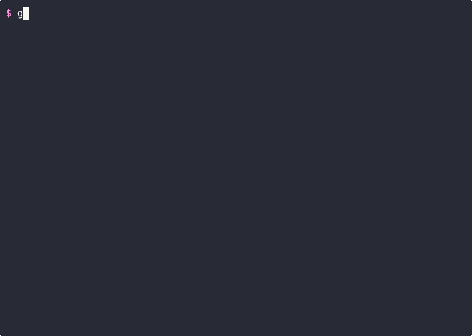
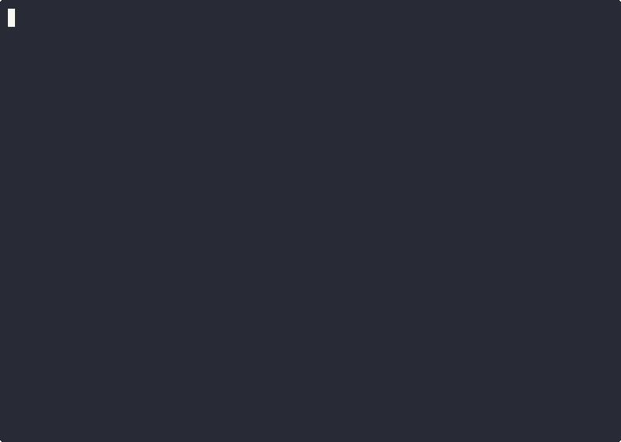
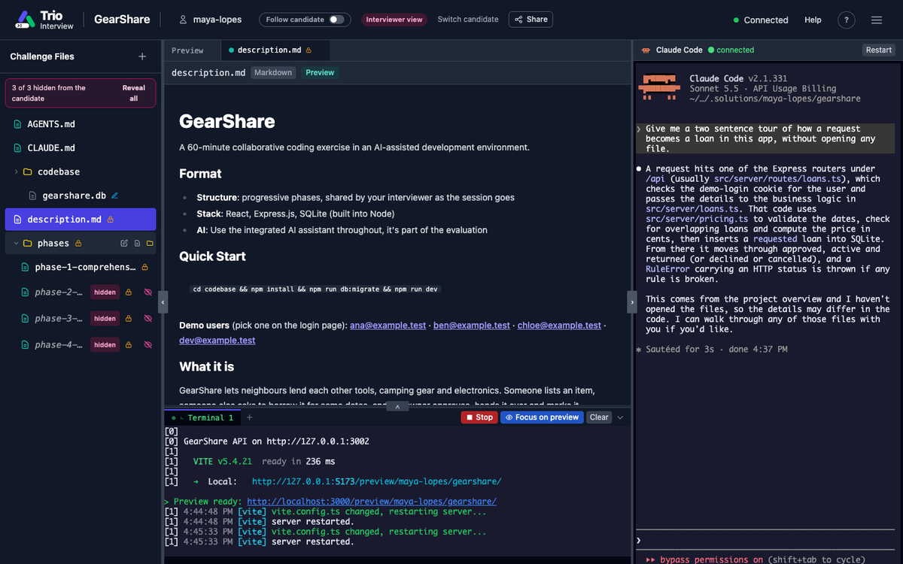

Contributing
Thank you for wanting to help. There are two ways in, and the first needs no code: you can add an exercise, or you can change the tool itself. Small pull requests that do one thing are the easiest to review, so start there.
Set up
nvm use # Node 25, see .nvmrc
make install # installs dependencies and checks Claude Code, OpenCode and the tunnel
make help # every commandmake dev starts the frontend and the backend with hot reload, make test runs the unit tests and make typecheck the type check. AGENTS.md explains how the tool is put together, and it is the file to give any AI agent that works on this repository.
Send a change

- Fork the repository and branch from
mainwith a short name (feature/,fix/orchore/followed by what it does). Nobody pushes tomaindirectly. - Make the change with a test. Logic goes in small functions that are easy to test, and the files that need a real process, terminal, socket or assistant stay thin.
- Run
npm run lint,make typecheck,make testandnpx next build. The pull request runs the same checks. - If you changed something people see, try it in the browser on both sides:
http://localhost:3000is the interviewer, andhttp://candidate.localhost:3000(or the tunnel link in another browser profile) is the candidate. - Open the pull request and say what changed and how you checked it. A screenshot helps for anything visual.
Add an exercise
Exercises you use live in exercises/, which git ignores, so they stay on your machine along with the work of every candidate. The ones that ship with the tool are in examples/, and you can start from them:
make new-exercise FROM=word-count # copy an example into exercises/ and change it
make new-exercise TITLE="Todo API" KIND=web # or make an empty one that already runsWith no options make new-exercise asks, and offers the examples first. A new exercise has a working exercise.json from the start, so you can pick it in make start before there is any code in it, and fill the files in afterwards.
An agent can write the content for you:

In Claude Code, OpenCode or any agent that reads files, ask it to run the create-exercise skill (.claude/skills/create-exercise/SKILL.md). It asks for the title, stack, duration and scenario, and whether some phases stay hidden, then writes the files. Read what it wrote, because the scenario and the starter code are your call. The animation is an illustration of the flow, and the questions you get depend on your agent.
Keep your exercises in your own repository
A company can keep its set in a private repository and bring it in on any machine. List the repository, or a folder, in interview.config.yaml:
sources:
- https://github.com/your-company/interview-exercises.git
- ../my-exercisesThen run make exercises. It copies each folder that has a description.md into exercises/, leaves alone any exercise that is already there, and skips folders whose names are not lowercase letters, digits and dashes. A git source is cloned over https or ssh and nothing else.
What an exercise is made of
exercises/<id>/
description.md the H1 is the title in the start menu, and the candidate reads it first
exercise.json locked files, hidden files, first file, assistant overview, how Run starts the app
phases/ phase briefs (optional)
codebase/ the starting code, or a single starter file for small exercisesAGENTS.md has the details of every file in "Creating an exercise". The rules that matter most:
description.mdmust not name or describe hidden phases. Hidden files are moved out of the candidate's folder, so the tree, the terminal and the assistant cannot see them, but all three read the description.- Notes for the interviewer (guides, solutions, grading) stay hidden or live outside the exercise, like the ones in
docs/interviewers/. - Lock
description.mdandphases/inexercise.json, plus any fixture or test the candidate must not edit. - Tests are optional. Add a
testsblock toexercise.jsonand the terminal bar shows Run tests (and Run both for a script). Keep the test file locked, write the tests as examples of behaviour (not the answer), and check that the starter fails them and a correct solution passes. Seeexamples/fibonacci/. - A web app uses a
run.serverPortof 3002 or higher and thevite.config.tsfromexercises/_templates/web-app/, so the preview works through the tool. - To share an exercise with everyone, send it as a pull request into
examples/, with its notes indocs/interviewers/.
Check it before you share it

Run make start, pick the exercise, open http://localhost:3000 and enter a name. Click Run if it has an app and confirm the preview opens. Then open the candidate side in another browser profile and check that locked files are read only and hidden files are not there, and reveal one from the interviewer side to see it appear.
Things worth knowing
When you change who may do what (roles, the choice of assistant, what a terminal assistant can reach), add a test that tries to break it. server/routes/__tests__/agent.test.ts is the example, because it calls the API the way a candidate could and not through the page.
The assistants that candidates talk to run on the interviewer's machine, so changes to server/lib/assistant-prompt.ts, to the flags in server/lib/claude-proxy.ts or server/lib/agent-pty.ts, or to what server/lib/opencode-pty.ts copies in, change what a candidate can do. Say what the effect is in the pull request.
Candidate data (.solutions/, exports/) and tokens never go in the repository, and git already ignores them.
House rules
English for code, docs and commit messages, short and plain, no emojis, and no dashes in prose. Never skip the git hooks. The tool is licensed under the AGPL-3.0, and by sending a change you agree that it is shared under the same license.